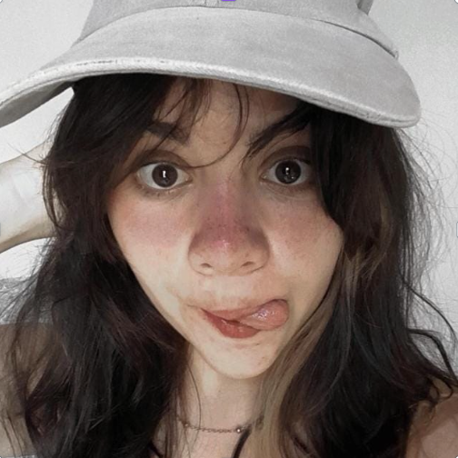

Kaian Gustavo
Um jovem desenvolvedor Front-End que aprecia o desenvolvimento e prototipação de sites.
A Ecocean é uma startup brasileira que se dedica à conservação dos oceanos. Embora seu foco não seja exclusivamente na restauração, a empresa desempenha um papel fundamental na manutenção da biodiversidade marinha. Suas soluções inovadoras contribuem para a preservação dos ecossistemas aquáticos. Entre suas iniciativas notáveis estão o #Biohut e o #Biorestore, que são vendidos globalmente e têm impacto direto na proteção de milhares de peixes
Um jovem desenvolvedor Front-End que aprecia o desenvolvimento e prototipação de sites.
Uma jovem desenvolvedora de bancos de Dados e aplicações Java.
Um jovem desenvolvedor de Inteligências artificiais e complexas programação em Python.